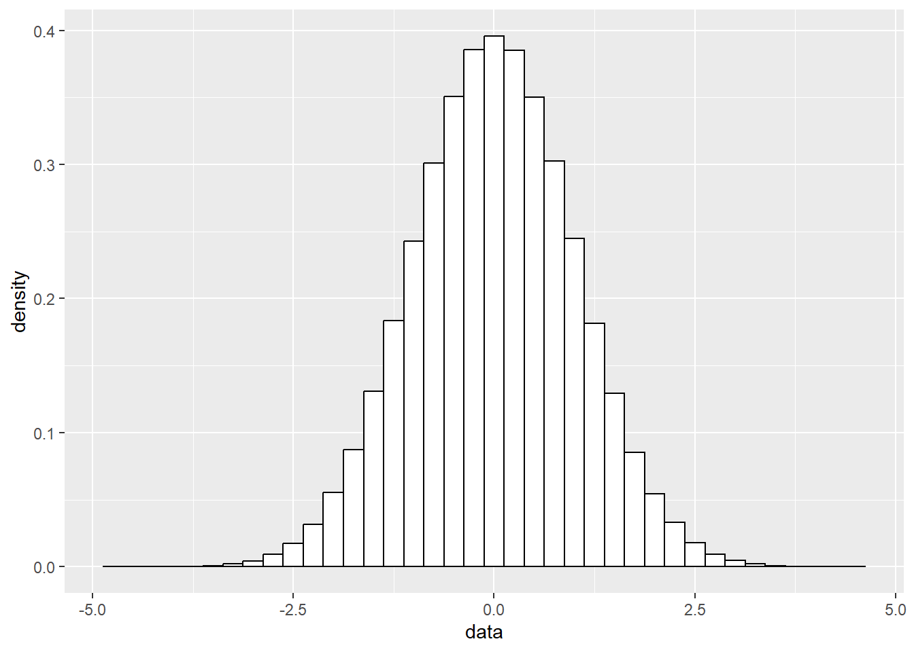
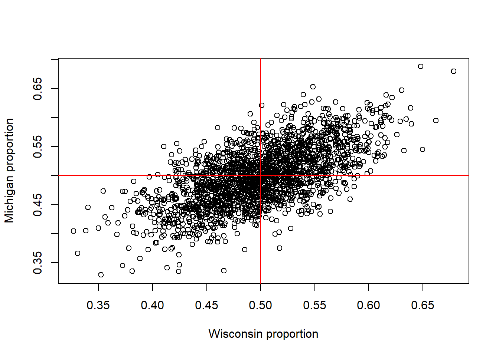

These notes will discuss the most fundamental object in statistics: random variables.
We use random variables, within the framework of probability theory, to model how our data came to be.
We will first introduce the idea of a random variable (and its associated distribution) and review probability theory.
Then, we will walk through a number of different basic distributions and discuss the kinds of data for which these different models are appropriate.
3.1 Learning objectives
After this lesson, you will be able to
Explain what a random variable is
Identify appropriate random variables for modeling different real-world events and explain why one choice might be better or worse than another
Combine random variables to build simple models of real-world phenomena
Compute the probabilities of simple events under different probability distributions using R.
3.2 What is a random variable?
Consider the following quantities/events:
Whether or not a coin flip comes up heads or tails.
How many people in the treatment group of a vaccine trial are hospitalized.
The water level measured in Lake Mendota on a given day.
How many customers arrive at a store between 2pm and 3pm today.
How many days between installing a lightbulb and when it burns out.
All of these are examples of events that we might reasonably model according to different random variables.
Later in your studies you will learn a more formal definition of what a random variable is. For now, let’s be content with saying that a random variable is a (random) number \(X\) about which we can compute quantities of the form \(\Pr[ X \in S ]\), where \(S\) is a set.
3.3 Aside: probability refresher
Before moving on, let’s briefly review some basic ideas from probability theory.
We have a set of possible outcomes, usually denoted \(\Omega\).
when we flip a coin, it can land either heads (\(H\)) or tails (\(T\)), so the outcomes are \(\Omega = \{H, T\}\).
When we roll a six-sided die, there are six possible outcomes, \(\Omega = \{1,2,3,4,5,6\}\).
In other settings, the outcomes might be an infinite set.
Ex: if we measure the depth of Lake Mendota, the outcome may be any positive real number (at least theoretically, anyway!)
In the vast majority of situations, \(\Omega\) will be either discrete (e.g., \(\{1,2,\dots\}\)) or continuous (e.g., \([0,1]\)) and we call the associated random variable discrete or continuous, respectively.
A subset \(E \subseteq \Omega\) of the outcome space is called an event.
A probability is a function that maps events to numbers, with the properties that
Two events \(E_1\) and \(E_2\) are independent if \(\Pr[ E_1 \cap E_2 ] = \Pr[ E_1 ] \Pr[ E_2 ]\).
Two random variables \(X\) and \(Y\) are independent if for all sets \(S_1,S_2\), we have \(\Pr[ X \in S_1 ~\&~ Y \in S_2 ] = \Pr[ X \in S_1 ] \Pr[ Y \in S_2 ]\).
Roughly speaking, two random variables are independent if learning information about one of them doesn’t tell you anything about the other.
For example, if each of us flips a coin, it is reasonable to model them as being independent.
Learning whether my coin landed heads or tails doesn’t tell us anything about your coin.
Example: Coin flipping
Consider a coin toss, in which the possible outcomes are \(\Omega = \{ H, T \}\).
This is a discrete random experiment, but beause the outcomes are not numeric it is not a random variable. If, however we define \(X\) to be 1 when we flip an \(H\) and 0 when we flip \(T\), then we have defined a discrete random variable, because the outcome set \(\{0,1\}\) is discrete.
If we have a fair coin, then it is sensible that \(\Pr[ X=1 ] = \Pr[ X=0 ] = 1/2\).
Exercise (optional): verify that this probability satisfies the above properties!
We will see in a moment that this is a special case of a Bernoulli random variable, which you are probably already familiar with.
Example: Six-sided die
If we roll a die, the outcome space is \(\Omega = \{1,2,3,4,5,6\}\), and the events are all the subsets of this six-element set.
So, for example, we can talk about the event that we roll an odd number \(E_{\text{odd}} = \{1,3,5\}\) or the event that we roll a number larger than \(4\), \(E_{>4} = \{5,6\}\).
Example: Human heights
Consider our human height example from our previous lecture.
We pick a random person and measure their height in, say, centimeters. What is the outcome space?
One option: the outcome space is the set of positive reals, in which case this is a continuous random variable.
Alternatively, we could assume that the outcome space is the set of all real numbers.
This highlights the importance of specifying our assumptions and the outcome space we are working with in a particular problem. We will see these kinds of issues again and again this semester.
3.3.1 A note on models, assumptions and approximations
Note that we are already making an approximation– our outcome sets aren’t really exhaustive, here.
When you toss a coin, there are possible outcomes other than heads and tails.
Perhaps the coin lands on its side (I have personally seen this happen with a nickel flipped onto an old wooden floor).
Similarly, perhaps the die lands on its side.
We can see a kind of idealization in our human height example.
We can only measure a height to some finite precision (say, two decimal places), so it is a bit silly to take the outcome space to be the real numbers.
After all, if we can only measure a height to two decimal places, then there is no way to ever obtain the event, “height is 160.3333333… centimeters”.
These kinds of approximations and idealizations are good to be aware of, but they usually don’t bother us much
We will see below and in future lectures the kinds of approximation errors that are more concerning and warrant our attention.
3.4 Random variables
A random variable is specified by a probability.
That is, a random variable \(X\) is specified by an outcome set \(\Omega\) and a function that specifies probabilities of the form \(\Pr[ X \in E ]\) where \(E \subseteq \Omega\) is an event.
Let’s look at some commonly-used random variables. In the process, we will discuss some of the real-world phenomena to which these random variables are best-suited.
3.4.1 Bernoulli
A Bernoulli random variable has outcome set \(\Omega = \{0,1\}\).
As discussed above, to specify a probability on this set, it is enough for us to specify \(\Pr[ \{0 \} ]\) and \(\Pr[ \{1\} ]\).
Typically, we do this by specifying the success probability\(p = \Pr[ \{1\} ] \in [0,1]\). Once we have done this, it is immediate that (check!) \(\Pr[ \{0\} ] = 1-p\).
Note that we can check that this gives us a probability by verifying that it sums to 1: \[
\Pr[ \Omega ] = \Pr[ \{0\} \cup \{1\} ] = \Pr[ \{0\} ] + \Pr[ \{1\} ] = 1-p + p = 1.
\] Bernoulli random variables are commonly used to model “yes or no” events. That is, events of the form “whether or not event \(A\) happens”. Common examples:
Coin flips
whether or not a person gets sick with a disease
whether or not a team wins a game.
If \(Z\) is a Bernoulli random variable with probability of success \(p\), then we write \(Z \sim \operatorname{Bernoulli}(p)\).
We read this as something like “\(Z\) is distributed as Bernoulli \(p\)”.
3.4.2 Binomial
A Bernoulli random variable is like a single coin flip.
What if we flip many coins, all with the same probability of coming up heads?
Then the total number of heads is distributed as a binomial random variable.
In particular, we describe a binomial distribution by specifying two parameters:
the number of trials (i.e., coins flipped) \(n\), often called the size parameter and
the success probability \(p\) (i.e., the probability that an individual coin lands heads).
Often we will write \(\operatorname{Binomial}(n,p)\) to denote this distribution.
So if \(X\) is a Binomial random variable with \(n\) trials and success probability \(p\), we write \(X \sim \operatorname{Binomial}(n,p)\).
Example: modeling COVID-19
In a population of 250,000 people (approximately the population of Madison), we may imagine that each person has some probability \(p\) of becoming seriously ill with COVID-19.
Then, in a sense, the total number of people in Madison who become seriously ill with COVID-19 is like the total number of probability-\(p\) coin flips that land heads when we flip \(250,000\) coins.
We might then model the number of COVID-19 patients by a binomial random variable with \(n=250,000\) and \(p=0.01\) (just to be clear, we are completely making up this choice of \(p\) here, just for the sake of example!).
3.4.2.1 Generating random binomial RVs
We can generate binomial random variables using the rbinom function. Think “r for random”.
# rbinom takes three arguments.# The first is the number of random variables we want to generate (confusingly, this is called n in the R docs).# The size argument specifies the number of coins to flip, i.e., n in our notation above (I know! Confusing!)# The prob argument specifies the probability that one coin lands heads, i.e., p in our notation above.rbinom(1, size =10, prob =0.3) # produces a random number from {0,1,2,...,10}, with 2,3,4 being most common (because np = 3 is the expected value we'll come back to this!)
[1] 3
# If we repeat the experiment a few times, we get different random values.rbinom(1, size =10, prob =0.3)
[1] 3
rbinom(1, size =10, prob =0.3)
[1] 3
rbinom(1, size =10, prob =0.3)
[1] 3
rbinom(1, size =10, prob =0.3)
[1] 4
rbinom(1, size =10, prob =0.3)
[1] 4
We can also use the binomial to generate Bernoulli random variables, by setting the size argument to 1 (i.e., flip 1 coin):
rbinom(1, size =1, prob =0.5) # 1 is "heads", 0 is "tails"
[1] 1
Important note: if you read the R documentation, there is a possible notational confusion waiting for you, alluded to in the comments of the code above. The signature of the rbinom function is given as rbinom(n, size, prob). Based on the \(\operatorname{Binomial}(n,p)\) notation we used above, you might expect that n in the rbinom function is the number of coins and prob is the success probability. Unfortunately, that isn’t quite right. n is the number of Binomial random variables to generate. size specifies the size parameter (\(n\) in our math notation above).
Compare the following:
rbinom(n =3, size =10, prob =0.5) # 3 draws from a Binomial(10,0.5)
[1] 5 4 8
rbinom(n =10, size =3, prob =0.5) # 10 draws from a Binomial(3,0.5)
[1] 3 1 2 1 0 1 1 3 3 0
All of the R functions for generating random variables take n as the number of draws from the distribution. This is in keeping with the convention in most of probability and statistics that \(n\) is a sample size. Unfortunately, this is just one of those places where two different notational conventions collide. It’s unfortunate that it arises in such a common and early-stage part of R!
3.4.3 Aside: expectation review
Before we continue with more random variables, let’s take a pause to discuss one more important probability concept: expectation. You will hopefully recall from previous courses in probability and/or statistics the notion of expectation of a random variable.
Expectation: long-run averages
The expectation of a random variable \(X\), which we write \(\mathbb{E} X\), is the “long-run average” of the random variable.
Roughly speaking, the expectation is what we would see on average if we observed many copies of \(X\).
That is, we observe \(X_1,X_2,\dots,X_n\), and consider their average, \(\bar{X} = n^{-1} \sum_{i=1}^n X_i\).
The law of large numbers (LLN) states that in a certain sense, as \(n\) gets large, \(\bar{X}\) gets very close to \(\mathbb{E} X\). (actually, there are two LLNs, the weak law and strong law, but that’s a matter for a later course!).
By analogy with our calculus class, we would like to say something like \[
\lim_{n \rightarrow \infty} \frac{1}{n} \sum_{i=1}^n X_i = \mathbb{E} X.
\] But \(n^{-1} \sum_i X_i\) is a random sum, so how can we take a limit?
Well, again, the details are a matter for your probability theory class, but roughly speaking, for \(n\) large, with high probability, \(\bar{X}\) is close to \(\mathbb{E}\).
Expectation: formal definition
More formally, if \(X\) is a discrete random variable, we define its expectation \(\mu\) to be \[
\mathbb{E} X = \sum_k k \Pr[ X = k]
\] where the sum is over all \(k\) such that \(\Pr[ X=k ] > 0\).
Note that this set could be finite or infinite.
If the set is infinite, the sum might not converge, in which case we say that the expectation is either infinite or doesn’t exist. But that won’t be an issue this semester.
Question: can you see how this definition is indeed like the “average behavior” of \(X\)?
Exercise: compute the expectation of a Bernoulli random variable with success probability \(p\). What about a \(\operatorname{Binomial}(n,p)\) random variable? Hint: the expectation of a sum of RVs is the sum of their expectations. Write the Binomial RV as a sum of Bernoullis.
Important take-away: the law of large numbers says that if we take the average of a bunch of independent RVs, the average will be close to the expected value.
Sometimes it’s hard to compute the expected value exactly (e.g., because the math is hard– not all sums are nice!)
This is where Monte Carlo methods come in– instead of trying to compute the expectation exactly, we just generate lots of RVs and take their average!
If we generate enough RVs, the LLN says we can get as close as we want.
We’ll have lots to say about this in our lectures on Monte Carlo methods next week.
Variance: formal definition
Also recall the variance is the expectation of the squared deviation from the mean, i.e: \[
\operatorname{Var}(X)=\mathbb{E}[(X-\mathbb{E}X)^2]=\sum_k (k-\mu)^2 \Pr[ X = k]
\] Similar to how the sample mean \(\bar{X}\) converges to \(\mathbb{E}X\), the sample variance \(s^2\) will converge to the true variance \(\sigma^2\), i.e: \[
\lim_{n\to\infty}\frac1{n-1}\sum_{i=1}^n(X_i-\bar{X})^2=\operatorname{Var}(X)
\]
3.4.4 Geometric
Let’s consider a different coin-flipping experiment. We flip a coin repeatedly and we count how many flips it takes before it lands heads.
So perhaps we flip the coin and it comes up heads immediately, in which case we would count zero (because there were no flips before the one where the coin landed heads). If we flipped the coin and it came up heads for the first time on the fourth toss, then we would count three, and so on.
This game describes the geometric distribution.
Its behavior is controlled by a single parameter, the probability \(p\) of landing heads.
The geometric distribution is a natural model for “time to failure” experiments.
For example, suppose we install a light bulb, and measure how many days until the lightbulb burns out (one such experiment has been ongoing for a very long time!.
We can generate random geometric random variables using the rgeom function:
rgeom(1, prob =0.5) # Generate one geometric random variable with p=0.5. Most likely outcomes: 0,1,2
[1] 0
The probability that a \(\operatorname{Geom}(p)\) random variable \(X\) takes a particular value \(k\) (\(k=0,1,2,\dots\)) is given by \(\Pr[ X = k ] = (1-p)^k p.\)
This is the probability mass function of the geometric distribution. It assigns, to each singleton in the outcome space, a nonnegative number (i.e., its probability), and it does so in such a way that these nonnegative numbers sum to 1 (this ensures that these numbers do indeed specify a probability distribution!). Some texts will refer to this function as a distribution function, but I will avoid it in our notes and lectures, because there is possibility of confusion with other related terms (e.g., the cumulative distribution function, which we’ll see soon).
Let’s plot this as a function of \(k\):
library(ggplot2)k <-seq(0, 15)p <-0.3df <-data.frame("k"= k, "Probk"= p * (1- p)^k)pp <-ggplot(df, aes(x = k, y = Probk)) +geom_col()pp
Looking at the plot, we see that the geometric distribution puts most of its probability close to zero– the most likely outcomes are 0, then 1, then 2, and so on.
We plotted the distribution only up to \(k=15\), but a geometric random variable can, technically, take any non-negative integer as a value.
For any value of \(k\), \(\\Pr[ X = k ] = p(1-p)^k\) is non-zero (as long as \(0 < p < 1\)).
So for any non-negative integer, there is a small but non-zero probability that a geometric random variable takes that integer as a value.
We say that the geometric random variable has infinite support.
The support of a discrete random variable is the set of values that have non-zero probability mass. A random variable has infinite support if this set is infinite.
Exercise: verify that this is a bona fide probability by checking that \(\sum_{k=0}^\infty p(1-p)^k = 1\).
Note: some resources follow a slightly different convention, whereby a geometric random variable counts the total number of attempts (i.e., coinflips) before success, so the support is \(\{1,2,\dots\}\). Our discussion above follows the convention of most textbooks and research papers (and the convention followed by R– see ?rgeom), but this is an important thing to be aware of!
3.4.5 Poisson
Let’s look at one more discrete distribution.
Suppose we are going fishing on lake Mendota, and we want to model how many fish we catch in an hour.
A common choice for this situation is the Poisson distribution (named after a French mathematician named Poisson, but “poisson” is also French for “fish”).
The Poisson distribution is a common choice for modeling “arrivals” or other events that happen per unit time. Common examples include
customers arriving to a store on a given day
calls to a phone line between 2pm and 3pm
photons or other particles hitting a detector during an experiment
cars arriving at an intersection
The Poisson distribution has probability mass function \[
\Pr[ X=k ] = \frac{ \lambda^k e^{-\lambda} }{ k! }, ~ ~ ~ ~ ~ ~ k=0,1,2,\dots
\] The parameter \(\lambda > 0\), often called the “rate parameter”, controls the average behavior of the random variable– larger choices of \(\lambda\) mean that the resulting random variable is larger, on average (we will make this statement more precise in a few lectures). That is, the larger \(\lambda\) is, the more arrivals happen per unit time– the larger \(\lambda\) is, the higher the rate!
We can generate Poisson random variables using rpois:
rpois(1, lambda =10.5) # Generate Poisson RV with lambda=10.5 most likely value is 10.
[1] 15
What if I want several random Poissons, instead of just one?
The n argument to rpois (and all the other random variable generation functions) specifies a number of variables to generate.
So, for example, to get ten random Poissons, we can write
rpois(10, lambda =10.5) # Generate 10 Poisson RVs with the same parameter lambda=10.5
[1] 8 17 9 9 13 12 10 13 11 7
What does the probability mass function of the Poisson look like? Once again, the Poisson distribution has infinite support, since \(\Pr[X=k] > 0\) for all \(k=0,1,2,\dots\) (check this!), but let’s plot its first few values.
k <-seq(0, 30)lambda <-10.5# On average, we should get back the value 10.5,df <-data.frame("k"= k, "Probk"=dpois(k, lambda))pp <-ggplot(df, aes(x = k, y = Probk)) +geom_col()pp
The function dpois above evaluates the Poisson probability mass function.
The R documentation calls this a density, which is correct, but… well, we will return to this.
For now, just remember “r for random”, “d for density”. rpois generates random Poisson variables, dpois evaluates its probability mass function.
3.4.6 The Discrete uniform
The roll of a fair 6 sided die (or any \(n\)-sided die) can be modeled using a discrete uniform random variable. We will more often refer to the continuous uniform random variable, (which we’ll talk about shortly), but it’s worth mentioning that the roll of a die can be modeled easily.
In R, however, the discrete uniform is not a named distribution. Instead we would use the sample function. For example, suppose we wanted to simulate rolling a 6-sided die 100 times.
# The sample function takes 3 important parameters.# x : this can either be a vector of values to sample from# or in this case simply the upper limit R will automatically# create a vector from 1 to this value to sample from# size : how many samples to generate# replace: this indicates whether we are able to re-sample the same value# more than once. Careful, the default value is FALSErolls <-sample(x =6, size =100, replace =TRUE)rolls
3.4.7 Aside: approximating one random variable with another
Interestingly, we can obtain the Poisson distribution from the binomial distribution.
Let’s make two assumptions about our fish population:
There are many fish in the lake. Let’s call the number of fish \(N\), which is a large number.
For each fish, there is a small probability \(p\) that we catch it (the same probability for each fish, for the sake of simplicity)
If we let \(N\) get arbitrarily large (“infinite” a limit like you remember from calculus) while \(p\) stays “small”, the Binomial distribution comes to be equal to the Poisson distribution with rate \(Np\).
For this reason, the Poisson is often a good approximation to the Bernoulli when \(N\) is large and \(p\) is small.
Just to illustrate, let’s plot the density of the binomial with \(N\) really large and \(p\) really small, but chosen so that \(Np = 10.5\) to match \(\lambda = 10.5\) above.
k <-seq(0, 30)lambda <-10.5N <-1e6p <- lambda / N # On average, we should get back the value lambdapoisprob <-dpois(k, lambda) # Vector of Poisson probabilitiesbinomprob <-dbinom(k, size = N, prob = p) # Binomial probs.# We need a column in our data frame encoding which of the two distributions a number comes from.# This isn't the only way to do this, but it is the easiest way to get things to play nice with the ggplot2 facet_wrap, which displays separate plots for different values in a particular column.dist <-c(rep("Poisson", length(k)), rep("Binom", length(k)))# Construct our data frame. Note that we have to repeat the k column, because our data frame is going to look like# Distribution k Probk# Poisson 0 dpois( 0, lambda )# Poisson 1 dpois( 1, lambda )# ... ...# Poisson 30 dpois( 30, lambda )# Binomial 0 dbinom( 0, N, p )# ...# Binomial 30 dbinom( 30, N, p )df <-data.frame("dist"= dist, "k"=rep(k, 2), "Probk"=c(poisprob, binomprob))pp <-ggplot(df, aes(x = k, y = Probk)) +geom_col() +facet_wrap(~dist)# facet_wrap tells ggplot to create a separate plot for each group (i.e., value) in the dist column.pp
We will see several examples like this during the semester, in which two distributions become (approximately) equivalent if we fiddle with the parameters in the right way.
3.5 Continuous random variables
So far we’ve seen a few different discrete random variables. Their set of possible values are discrete sets like \(\{0,1\}\) or \(\{0,1,2,\dots\}\).
This is in contrast to continuous random variables, which take values in “continuous” sets like the interval \([0,1]\) or the real like \(\mathbb{R}\).
Discrete random variables have probability mass functions, like \(\Pr[ X=k ] = p(1-p)^k\), \(k=0,1,2,\dots\).
In contrast, continuous random variables have probability density functions, which we will usually write as \(f(x)\) or \(f(t)\).
These random variables are a little trickier to think about at first, because it doesn’t make sense to ask about the probability that a continuous random variable takes a specific value. That is, \(\Pr[ X = k ]\) doesn’t really make sense when \(X\) is continuous (actually– in a precise sense this does make sense, but the probability is always zero you’ll see why below).
Let’s see some examples.
3.5.1 Normal
The normal or Gaussian (after Carl Friedrich Gauss) random variable is undoubtedly the most fundamental in all of statistics.
You have likely heard of it before both in your previous courses and just… well, everywhere, in the form of the famous bell curve.
The normal distribution really is everywhere, and there are good reasons for this, which we will return to in a few lectures (see here for a preview).
The normal distribution is controlled by two parameters: a mean \(\mu \in \mathbb{R}\) and a variance \(\sigma^2 > 0\).
The standard normal has \(\mu = 0\) and \(\sigma^2 = 1\), and it “looks like” this:
x <-seq(-4, 4, 0.1)f <-dnorm(x, 0, 1) # eval density at x values, mean mu=0, standard deviation sigma=1.df <-data.frame("x"= x, "density"= f)pp <-ggplot(df, aes(x = x, y = density)) +geom_line(size =1)
Warning: Using `size` aesthetic for lines was deprecated in ggplot2 3.4.0.
ℹ Please use `linewidth` instead.
pp
This is the probability density function of the standard normal. Of course, the curve extends out to infinity on the right and negative infinity on the left we just haven’t plotted it.
Hopefully this is a familiar shape to you. If not, no worries– you’ll see it plenty as you continue your studies.
This is a probability density, not a mass function, because to evaluate something like the probability that a normal random variable \(X\) falls between, say, \(-1\) and \(1\), we have to integrate the area under this curve between these two endpoints.
This is why we refer to this as a density– recall from physics that integrating a density over a region (i.e., a volume) gives us a mass (compare to the discrete case, where we did call it a probability mass function).
Said another way, integrating the density over a region gives us the probability of that region. So if \(X\) is a normal random variable with mean \(\mu\) and variance \(\sigma^2\), \[
\Pr[ -1 \le X \le 1 ] = \int_{-1}^1 f(t; \mu, \sigma^2) dt,
\] where \(f(t; \mu, \sigma^2)\) is the density function of the normal distribution, \[
f(t; \mu, \sigma^2) = \frac{1}{\sqrt{ 2\pi \sigma^2 } } \exp\left\{ \frac{ -(t-\mu)^2 }{ 2\sigma^2 } \right \}.
\] The weird semicolon notation is to emphasize that the density is a function of \(t\), but its shape depends on \(\mu\) and \(\sigma^2\).
Think of \(\mu\) and \(\sigma\) as two knobs we can twiddle to change the shape of the curve.
Changing \(\mu\) while keeping \(\sigma^2\) fixed just shifts the distribution:
x <-seq(-6, 6, 0.1) # Some x values to evaluate atf1 <-dnorm(x, -2, 1) # mean mu=-1, standard deviation sigma=1.f2 <-dnorm(x, 0.5, 1) # mean mu=1.5, standard deviation sigma=1.f3 <-dnorm(x, 1.5, 1) # mean mu=1.5, standard deviation sigma=1.mu <-c(rep(-1, length(x)), rep(1.5, length(x)), rep(2.0, length(x)))df <-data.frame("x"=rep(x, 3), "density"=c(f1, f2, f3), "mean"=as.factor(mu))pp <-ggplot(df, aes(x = x, y = density, color = mean)) +geom_line(size =1)pp
Changing \(\sigma\) changes the standard deviation (and hence also the variance, \(\sigma^2\)). Larger \(\sigma\) means higher variance, which means a “wider” distribution:
x <-seq(-6, 6, 0.1) # Some x values to evaluate atf1 <-dnorm(x, 0, 0.5) # mean 0, standard deviation sigma=1.f2 <-dnorm(x, 0, 1) # mean 0, standard deviation sigma=2.f3 <-dnorm(x, 0, 2) # mean 0, standard deviation sigma=3.sigma2 <-c(rep(0.5, length(x)), rep(1, length(x)), rep(2, length(x)))df <-data.frame("x"=rep(x, 3), "density"=c(f1, f2, f3), "variance"=as.factor(sigma2))pp <-ggplot(df, aes(x = x, y = density, color = variance)) +geom_line(size =1)pp
We’ll have plenty more to say about this later in the semester when we talk about fitting models to data. For now, think back to our human heights example from our introductory lecture– we played with the \(\mu\) and \(\sigma^2\) parameters to find a normal distribution that “looked” a lot like our observed data.
We can generate normal random variables in R using the rnorm function:
rnorm(1, mean =1, sd =2) # Note that we pass the standard deviation (sd), not the variance sigma^2.
[1] 0.7080544
rnorm(1) # If we don't specify a mean and sd, they default to 0 and 1, respectively
[1] -1.023645
Let’s generate a bunch of normal RVs and plot their (normalized) histogram:
# Reminder: if mu, sigma unspecified, they default to mu=0, sigma=1data <-rnorm(1e6) # 1e6 = 1.0x10^6 = one million standard normal RVspp <-ggplot(data.frame("x"= data), aes(x = data))pp <- pp +geom_histogram(aes(y = ..density..), binwidth =0.25, color ="black", fill ="white")pp
Warning: The dot-dot notation (`..density..`) was deprecated in ggplot2 3.4.0.
ℹ Please use `after_stat(density)` instead.

Note that this is a normalized histogram– it is scaled so that the areas of the rectangles sums to 1, like a probability distribution.
Now, let’s overlay the normal density function on this.
x <-seq(-5, 5, 0.1)f <-dnorm(x, mean =0, sd =1) # Evaluating the density at points xdf_dnorm <-data.frame("x"= x, "f"= f)pp <- pp +geom_line(data = df_dnorm, aes(x = x, y = f), size =1, color ="red")pp
Look at how closely the histogram matches the density! This is no accident. The density describes the average-case behavior of the random variable.
Because we plotted a standard normal, one unit on the x-axis of the plot above is one standard deviation.
You will hopefully recall from any previous statistics courses that a normal random variable falls
within one standard deviation of the mean (i.e., between -1 and 1 in the plot above) with probability about 0.68,
within two standard deviations of the mean (i.e., between -2 and 2 in the plot above) with probability about 0.9545
within three standard deviations of the mean (i.e., between -3 and 3 in the plot above) with probability about 0.997.
We can approximately check this by counting how many of our simulated normals fall in these ranges. What fraction of these data points fell within one standard deviation of the mean?
sum(data >-1& data <1) /length(data) # Should be about 0.68
[1] 0.682746
sum(data >-2& data <2) /length(data) # should be about 0.9545
[1] 0.954521
sum(data >-3& data <3) /length(data) # should be about 0.997
[1] 0.99727
Of course, because the data is random, the proportions are not exactly equal to their predicted values, but they are quite close.
This is a nice illustration of the law of large numbers!
3.5.1.1 Computing probabilities
Now, let’s check this fact by using R to compute probabilities of the form \(\Pr[ a \le X \le b ]\) for a normal RV \(X\), where \(a \ge b\). How can we compute this probability?
Let’s start by writing something slightly different: \[
\Pr[ X \le b ] = \Pr[ X \le a ] + \Pr[ a \le X \le b].
\]
Question: why is this true? What “rule” of probability are we using?
Now, let’s rearrange that expression: \[
\Pr[ a \le X \le b] = \Pr[ X \le b ] - \Pr[ X \le a ].
\]
How exactly does this help us? We replaced one probability with a sum of two… that seems worse!
…at least until I tell you (or you remember from previous courses) that for all the “nice” distributions, R makes it very easy to compute probabilities of the form \(\Pr[ X \le a]\). The function \[
F_X(t) = \Pr[ X \le t]
\] is called the cumulative distribution function (CDF) of \(X\).
We compute the CDF of the normal in R with pnorm. So, for example, to compute the probability that a standard normal random variable is \(\le 0\), we can write
pnorm(0) # Once again, mu, sigma default to 0,1.
[1] 0.5
Aside/exercise: You might enjoy spending some time thinking on why it is “obvious” that a normal random variable is less than or equal to its mean with probability one half. Remember (look at the density function above, or just look at our plots) that the normal density is symmetric about the mean \(\mu\). If you’re feeling up to it (warning: calculus ahead!), you can try computing the appropriate integrals to show that under the normal, \(\Pr[ X \le \mu ] = \Pr[ X > \mu ] = 1/2\).
So suppose that we want to compute the probability that a standard normal random variable is less or equal to 1. This would be
pnorm(1) # again, recall the default behavior.
[1] 0.8413447
And to compute the probability that we are within one standard deviation of the mean, we need to compute \[
\Pr[ -1 \le X \le 1] = \Pr[ X \le 1 ] - \Pr[ X \le -1 ] = \texttt{ pnorm(1) - pnorm(-1) }
\]
That is,
pnorm(1) -pnorm(-1)
[1] 0.6826895
which matches our 0.68-.9545-0.997 rule so far. Let’s check the other two.
pnorm(2) -pnorm(-2)
[1] 0.9544997
pnorm(3) -pnorm(-3)
[1] 0.9973002
By the way, if you’ve seen this bell-shaped curve before in your classes, you probably associate it with Z-scores and the magic number 1.96.
We’ll see a bit of that this semester, but for the most part, we will use Monte Carlo simulation to do testing.
This is a different approach to statistics that lets us avoid worrying so much about Z-tables and 1.96 and all that, but in the interest of full disclosure: really most of the basic parts of R are just fancy Z-tables. So R does the annoying work for us!
3.5.2 Recap: RVs in R (so far)
So far, we have seen three functions for working with different distributions.
For the normal, we have rnorm, dnorm and pnorm, corresponding to random variable generation, the density function and cumulative distribution function (CDF), respectively.
Other RVs have similar patterns. For example, with the geometric random variable, we have rgeom, dgeom and pgeom, which work analogously to the normal case.
There is one more of these functions yet to come, but we aren’t quite ready to introduce it.
3.5.3 Aside: Expectation for continuous random variables
Previously, we defined the expectation of a discrete random variable \(X\) to be \[
\mathbb{E} X = \sum_k k \Pr[ X = k ],
\] with the summand \(k\) ranging over all allowable values of \(X\).
When \(X\) is continuous, the sum doesn’t make sense, so how should we define the expectation?
Well, just change the sum to an integral! After all, the integral sign is just a fancy S for “sum” (okay, it’s for the Latin word “summa” or something along those lines, but close enough!).
\[
\mathbb{E} X = \int_\Omega t f(t) dt,
\]
where \(f(t)\) is the density of \(X\) and \(\Omega\) is the support.
Exercise: Let’s flex those calculus muscles! Check that the mean of a normal with mean \(\mu\) and standard deviation \(\sigma\) is indeed \(\mu\). That is, check that \[
\int_{-\infty}^\infty \frac{ t }{ \sqrt{ 2\pi \sigma^2}} \exp\left\{ \frac{ -(t-\mu)^2 }{ 2\sigma^2 } \right\} dt = \mu.
\]
Hint: Make the substitution \(u=t-\mu\) and use the facts that
\(f(t) = e^{-(t-\mu)^2/2\sigma^2}/\sqrt{2\pi \sigma^2}\) integrates to \(1\) (because it is a probability density), and
\(g(u) = u \exp\{ -u^2/2\sigma^2 \}\) is symmetric about zero (and thus integrates to zero).
3.5.4 Uniform
The uniform distribution is a continuous random variable whose density is constant on its outcome space.
That is, for continuous set \(\Omega \subseteq \mathbb{R}\), the density is identically \(f(t) = c\).
Remember that our probability has to sum to 1, but since we have a continuous support, this sum becomes an integral:
\[
\int_{\Omega} f(t) dt = \int_{\Omega} c dt = c \int_{\Omega} 1 dt.
\]
So to make the probability integrate to \(1\), we need \(c = \int_{\Omega} 1 dt\).
Most commonly, we take \(\Omega = [0,1]\), and call the resulting random variable “uniform 0-1”, written \(\operatorname{Unif(0,1)}\).
The density function of \(\operatorname{Unif(0,1)}\) is then given by \[
f(t) = \begin{cases}
1 &\mbox{ if } 0 \le t \le 1 \\
0 &\mbox{ otherwise. } \end{cases}
\]
Exercise: check that this indeed integrates to \(1\), i.e., that it is a valid probability density. The support is \([0,1]\), so we need to check that \(\int_0^1 1 dt = 1\).
The most common application of uniform random variables is in simulations when we need to make a random decision.
For example, suppose we didn’t have the Bernoulli distribution available to us for some reason, but we still wanted to generate random coin flips.
To generate a \(\operatorname{Bernoulli}(p)\) random variable, we could first draw a uniform random variable \(U \sim \operatorname{Unif}(0,1)\) and then output \(1\) (or “heads” or “true”) if \(U \le p\) and out put \(0\) (or “tails” or “false”) otherwise.
3.5.5 Exponential
Let’s look at one more continuous random variable.
The exponential distribution is most commonly used to model “waiting times”, like how long until the bus arrives.
In many ways, the exponential distribution is like the continuous version of the geometric distribution.
Like geometric random variables, the exponential distribution is non-negative and is controlled by a single parameter \(\lambda > 0\), called the rate (because larger \(\lambda\) means less time before the event, hence more events per unit time, i.e., a higher rate of events).
The density is given by \[
f(t \lambda ) = \begin{cases}
\lambda \exp\{ - \lambda t \} &\mbox{ if } t \ge 0 \\
0 &\mbox{ otherwise. }
\end{cases}
\]
Exercise: check that this defines a probability distribution by checking that for any \(\lambda > 0\), (1) \(f(t \lambda) \ge 0\) and (2) \(\int_0^\infty f(t \lambda) dt = 1\).
Let’s plot this density as a function of \(t\) for \(\lambda = 1\).
x <-seq(0, 10, 0.1)f <-dexp(x, rate =1)df_exp <-data.frame("x"= x, "density"= f)pp <-ggplot(df_exp, aes(x = x, y = density)) +geom_line(size =2)pp
Looking at the density, we see that most of the probability is near zero.
Roughly, it looks like the vast majority of the time, \(X \sim \operatorname{Exp}(1)\) should be less than 5. Let’s check!
data <-rexp(n =1e6, rate =1) # rexp to generate random exponentials.sum(data <5) /length(data) # something like 99% of the generated points should be below 5.
[1] 0.993268
3.5.6Bonus: Building Bigger Models
There are plenty more named distributions out there. See here.
Indeed, we can make all sorts of distributions– ultimately we just need to specify a support and a density or mass function, depending on whether we want a discrete or continuous variable.
More often, though, the processes out in the world that we want to model require that we build more complicated models from simple ones.
3.5.7 Social network models
Several professors in the statistics department study networks. A common example of these are social networks (e.g., Facebook and twitter).
These data usually take the form of a list specifying who is friends with whom.
In most models for social networks, each pair of people \(i\) and \(j\) become friends, independently, with some probability \(p_{ij}\).
Often, these probabilities depend on other random variables.
For example, we might have a (random) number for every person that describes how much that person likes sports, and pairs of people who both have a high “sports score” are more likely to be friends (i.e., \(p_{ij}\) is higher).
In this way, we combine different elementary random variables (e.g., Bernoullis and normals) to yield more complicated distributions (say, a probability distribution over “possible social networks”).
Having obtained a network from Twitter or Facebook data, we apply all sorts of different functions to it that describe the network’s structure (e.g., compute shortest paths or eigenvectors, if you know what those are).
It is really difficult to do the math out exactly to determine analytically how these different functions behave.
Instead, we often appeal to Monte Carlo methods, which we will discuss in the next lecture.
3.5.8 Binomial asset pricing model
Another way to create new random variables is to take a function of another random variable. This is what happens in the pricing of “options” in finance.
Suppose that \(X\) is the price of stock XYZ one month from today.
An “option” pays you \(f(X)\) on that day for some function \(f\).
For example, suppose stock XYZ costs $120 today and the function is
This is often referred to as a put option. It is essentially giving you the option to purchase the stock in one month and sell it at today’s price.
If the price goes up, you would not use that option and you would make zero (but not lose any additional money, such as the cost of buying the option in the first place).
Otherwise, you would make \(120−X\).
In effect, you are betting that the price will go down.
Suppose you are a bank and someone wants to purchase this put option. You need to determine the price.
What would be the fair price to charge them?
To make a good guess, we need a model for the asset price \(X\).
Once we have such a model, we can derive analytical expressions for \(f(X)\) or use Monte Carlo methods, which we will discuss soon.
One of the simplest models for \(X\) is the Binomial Asset Pricing Model, which says that at every time step (e.g., every minute), the price goes up by one penny with probability \(p\), or down by one penny with probability \(1−p\).
In this example, both \(X\) and \(f(X)\) are random variables.
Question: The Binomial Asset Pricing Model is a very simple model, especially given how complicated the stock market is. Can you think of any possible problems with the model?
3.5.9 Election models
Will the Democratic (D) or Republican (R) presidential candidate win Wisconsin in 20xx?
What is the distribution of this random variable \(W\), where \(W=−1\) if D and \(W=1\) if R?
What about neighboring Michigan \(M \in \{-1,1\}\)?
Wisconsin and Michigan are not so different, so if we find out that the Republican candidate won Michigan (i.e., we learn about \(M\)), then that certainly tells us something about \(W\).
That is to say, \(W\) and \(M\) are not independent.
What if we wanted to model both Wisconsin and Michigan together?
We usually write this as a pair \((W,M)\).
One thing you could do is model the proportion of votes for D vs R in Wisconsin (ignoring third parties) as normally distributed.
Perhaps you consider this to be \(W_p \sim \operatorname{Normal}(1/2,.05)\).
Then, \(W\) is 1 if \(W_p>.5\) and \(W=−1\) if \(W_p<.5\).
This helps because we can do the same thing for \(M\), based on and \(M_p\).
To simulate these, you need to specify both the mean, which is now a two-dimensional “vector” and a covariance matrix \(\Sigma \in \mathbb{R}^{2 \times 2}\).
The diagonal of the matrix \(\Sigma\) specifies the variances of \(W_p\) and \(M_p\) respectively, and the off-diagonal \(\Sigma_{1,2}\) specifies the covariance between \(W_p\) and \(M_p\).
If you haven’t heard of covariance before, think of it like a measure of how closely two variables track one another, similar to correlation.
When the covariance is large and positive, the two variables tend to track one another.
If the covariance is large and negative, the two variables are inversely related to one another.
Let’s try simulating some election results.
mu <-c(.5, .5) # Vector of means both W_p and M_p are mean 1/2.CovMx <-matrix(c(.05^2, .04^2, .04^2, .05^2), nrow =2) # Make a two-by-two symmetric matrix.CovMx
[,1] [,2]
[1,] 0.0025 0.0016
[2,] 0.0016 0.0025
library(MASS) # This library includes a multivariate normal
Warning: package 'MASS' was built under R version 4.2.3
WpMp <-mvrnorm(n =2000, mu = mu, Sigma = CovMx) # mvrnorm is the multivariate version of rnorm.plot(WpMp, xlab ="Wisconsin proportion", ylab ="Michigan proportion")lines(c(.5, .5), c(-10, 10), col ="red")lines(c(-10, 10), c(.5, .5), col ="red")

Each point in this plot corresponds to one simulated election.
Questions:
What region of this plot corresponds to \(W=−1\) and \(M=+1\)?
Does it make sense that there are fewer points in the top left compared to the top right?
Are Michigan and Wisconsin positively or negatively correlated (based on this plot, anyway)?
3.5.10 Review:
In these notes we covered:
The basic rules of probability: outcome spaces, events
the concept of a random variable
Families of discrete random variables: Bernoulli, binomial, geometric, Poisson and uniform
Families of continuous random variables: Gaussian (normal), exponential and uniform
3.5.7 Social network models
Several professors in the statistics department study networks. A common example of these are social networks (e.g., Facebook and twitter).
These data usually take the form of a list specifying who is friends with whom.
In most models for social networks, each pair of people \(i\) and \(j\) become friends, independently, with some probability \(p_{ij}\).
Often, these probabilities depend on other random variables.
In this way, we combine different elementary random variables (e.g., Bernoullis and normals) to yield more complicated distributions (say, a probability distribution over “possible social networks”).
Having obtained a network from Twitter or Facebook data, we apply all sorts of different functions to it that describe the network’s structure (e.g., compute shortest paths or eigenvectors, if you know what those are).
It is really difficult to do the math out exactly to determine analytically how these different functions behave.
Instead, we often appeal to Monte Carlo methods, which we will discuss in the next lecture.